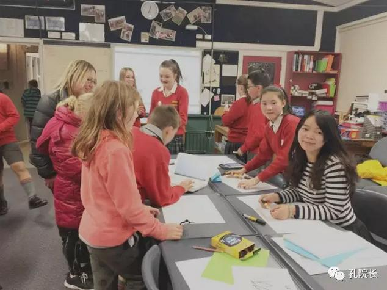
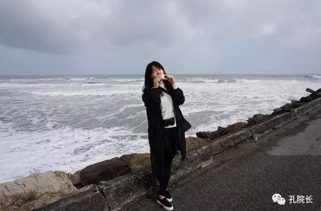

每日一篇——志愿者风采/从“东土大唐”到新西兰 “中土世界”的少女
 738
738
来源：原创 作者：余婷
你见过晚上八点的太阳吗？以前没见过，现在见过了。
你走过冰川火山、踏过雪原农场吗？以前没经历，现在经历了。
你感受过在大街上被此起彼伏的学生问好、在舞台上被五百多人齐唱生日歌吗？
是的，所有的一切，都被从东土大唐来到中土世界的少女解锁了。新西兰的一切，对我而言，是全新而温暖无比的一切。
老早就计划来一次生活总结，导火索是这一年来被泡在蜜糖里的愉悦和感动。这一年来任教于新西兰但尼丁的四个中小学，收获了近千个天使的爱，感觉不是一般的sweet。 我明明才踏上飞机降临这个桃源，可时间的尾巴已经从我眼前划过，提醒我该回去了。不想告别，不忍告别，我想了很多排比拟人句，却怎么都无法概括这段新生活。
我决定把它命名为《被天使宠爱的少女日常》。
我从学生们身上找回了一种甜甜的少女心。整个但尼丁Balmace片区的天使们都被我承包了哟！
上下班就是走红地毯，沿途跟天使们说“你好”、“再见”；有时遇上列队前行的天使们，变身大明星模式，一个个跟小粉丝们say hi 微笑加拥抱。逛街也能随处碰上偷瞄却不敢上前的天使，微笑凝视过去便能得到一个扑来的拥抱温暖BUFF。
甚至每次去游泳馆都能收获几只，犹记第一次在水池被近十个天使们围抱在一起，简直幸福炸裂，蜜糖般美好甜蜜。回想起来记忆最深的是wakari小学的九岁小男神，被他的突袭背后拥抱、叫上小伙伴想把我拦腰扛起、挨坐在我身边、帮我别头发、夸我耳钉美丽给撩的少女心颤不已。
刚开始第一个学期最后一周跟天使们说再见，却被误以为再也不见，被拦着不让走，一个个送卡片索拥抱。当时被Maori Hill学校的小女生拦在校园，认认真真的跟我说“喜欢我”、“希望我开心快乐”时，抱着她差点要哭出来。还有一个胖嘟嘟的小男生，抱着个食盒腼腆直冲我笑却不说话，我上前打招呼，他才羞涩的把食盒递过来，“给你，这是我自己做的。”小点心里夹了一层巧克力，可甜可甜。
在Balmace学校上课时，临走前有个女学生跑到staff room，一看见我便抚住胸口喘气“还好你还在学校”，她递上一张手工贺卡，“我是特地过来跟你说再见的，祝你假期愉快！”。怎么可以那么甜呢？
“Thank you very much for this fun term——Dani:-D”.
也正是因为这些甜蜜的天使，让我更加投入工作，每天绞尽脑汁想新话题活动、设计新的课堂游戏，认真的去钻研怎样教更有效率且更有趣。这一年来也举办和支持了很多中文活动，各个地区学校的中文沉浸日、学校的open night、中秋节活动、孔子课堂开幕等，一点点成长，一点点收获。最开心的莫过是得到当地学校、老师、学生的肯定和喜欢，甚至还有学生家长特地过来表示感谢，让我感受到了自己最棒的价值。
谢谢这个中土世界给我的所有，感恩这一年遇见的一切。少女会继续加油！

和学生们在课堂上
作为一名坎特伯雷大学孔子学院的志愿者教师，我被调派至但尼丁的Balmacewen Intermediate Cluster任教，我负责的是Balmacewen中学以及周边的Wakari School、Kaikorai School、Maori Hill School三所小学，学生层次从1年级至8年级，总共37个班，大概有一千名学生。
教了三个小学和一个中学，每个学校、每个班的画风都不大一样。这也是我一直觉得神奇的一件事。在我任教的几个年级中，中学的7年级是我最喜欢的，他们基本是零基础，算是我的直系子弟了，经常是还没走到教室便会从窗外看到他们站起来喊我老师大声说你好，每次与他们的上课时间都愉快而美妙，气氛热烈异常。8年级相对就老成了不少，然而这样纪律性更强，也让我更好管理课堂。
小学生们的画风就变得异常萌。上次从Wakari放学准备去下一所学校，走到门口怀里就扑进了一个天使，然后是周围天使们蝗虫般扑来拥抱献吻，手忙脚乱之于还要回应四处天使们此起彼伏的问好。那一刻觉得自己是大明星，是被天使们宠爱的大明星。虽然课程每天全满，每天到最后嗓子都不行，但是得到这么多天使，还是很值。
在Tahuna 的中文沉浸日上我负责了孔雀舞的workshop，6组学生轮番上课，忙的喝口水也找不到时间，虽然累但是超开心。孩子们特别喜欢，一个劲的说不用休息想学更多，家长老师们也闻讯而来，四处拍照拍视频，还有来自Otgao Daily Times的记者过来录像，气氛简直棒呆。
结束的时候发生了一件很让我感触的事情，当时我们学的是孔雀舞，背景音乐是彩云之南，下午结束的时候，我们正要喘口气，一个家长从角落走上前来拥抱我们，来自云南的她眼眶含泪，向我们道谢赞扬，诉说着在异国他乡看到所有人都学习着来自家乡的舞蹈，听着家乡的音乐有着怎样的激动和感动。握着她的手，我突然觉得超级骄傲自豪。当天的活动上了第二天的ODT报纸和视频网站，第一次新闻出境竟然是在国外媒体，也是异常的开心。

在但尼丁海边
中秋节的时候Columba College开展了一周的中秋节庆祝活动，我也带着各个学校的孩子们前去参加庆祝。这是我第一次带着学生们外出交流，感觉和她们感情更亲密了一些，一路上孩子们对我的中文课给了很多的赞赏和支持，现在想起来内心都是温暖的，有一种舍不得和她们说再见的异样心情。
前段时间也参加了Balclutha的孔子课堂开幕式。开幕仪式上我表演了中国舞蹈，之后便在cook tech教前来的学生、老师们包饺子做饺子，又是异常忙碌又开心的一天，然而看到汉语之花一个个绽开，看到学生们热爱中文，喜欢中国的文化，便更加认定了自己正在做的是一件多么有意义的事情。
在新西兰教学的一年慢慢就要进入尾声了，节奏快而不乱的一年，在Balmacewen Cluster这四所学校任教的这一年，在教学方面我得到最大的收获便是因材施教。我任教于四所学校，学生层次由1年级到8年级，共37个班，近千名学生。对于这么一个庞大的学生数字，如何让中文课堂的效果得到最大限度的呈现，让不同层次的学生们一起感受到学习中文的快乐，是我一直在思考的问题。从第一学期的摸索到后来的游刃有余，关键便在于做到心中有数，转换灵活。
所以新志愿者刚到学校一定要从了解学校、任教班级、自己的学生开始。每个班级都有自己不一样的特质，有的班级特别乖巧，可张可驰；有的班级特别活跃，有时会过于活跃，这个时候纪律问题就需要注意；有的班级特别安静沉稳，默默听课却不附和；如果比较不幸的话，还会遇到一些问题班级，你根本拿学生没办法。我们要做的，便是针对不同特质的班级、学生进行教学和教学活动上的调整。
我的小学1-4年级课堂（Junior/Middle），通常是以歌舞活动形式展开的，这一阶段的孩子们注意力并不能集中于常规课堂，所以要转换思路。让这群小天使们动起来，唱歌、跳舞、画画、游戏，在丰富多彩又异常有效的活动中一点点去渗透中文。
我的小学5-6年级课堂（Senior），是以话题形式展开的。这个年级的孩子好奇心强，对于新鲜事物特别感兴趣，而且很善于展现自己。所以5-6年级的课堂上，我花在新课讲解的时间只有三分之一，另外的时间则是游戏、活动，针对不同的话题设计游戏，换着花样让学生们感受到中文课的精彩，每周都期盼着中文课。
我的中学7-8年级课堂，7年级会比8年级更活跃一些，所以课堂游戏活动也会更多一些。8年级的几个班会相对来说更沉稳，所以教学内容增多了，且内容会更深刻一点，设计游戏则不能像小学课堂过于简单直白，需要加入一些让他们觉得高大上的东西，给他们创作思考的空间。
希望所有的海外对外汉语教师都能在享受教学的同时收获成长，共勉。
作者简介：
余婷，华中科技大学人文学院研究生，2016年1月至2016年12月担任新西兰坎特伯雷大学孔子学院汉语教师志愿者，任教于但尼丁Balmacewen Intermediate Cluster。